Альбом взірців: звідки брати українське для Люстерка
Шість попередніх робіт про айдентику писались із текстів. Тут до кожного напрямку, який вони називали, знайдено справжні речі — рушник, сорочку, книжку, будинок, миску — і кожну розглянуто як зображення: що в ній де стоїть, скільки чого, якого вона кольору насправді.
Як читати аркуш. Спершу — що про напрямок казали тексти й чого з них не видно. Далі взірці: знімок, підпис зі сторінки джерела, побачене, виміри й кольори, зняті з пікселів знімка (світло музею й вік фотографії їх зсувають — це кольори знімка, а не нитки). Потім два висновки: що робить річ красивою і яку роботу вона могла б нести в продукті. Наприкінці — проба перенесення поруч зі взірцем: у ній нема нічого, намальованого з пам'яті, — лише обводи, зняті програмою з того самого знімка, його кольори й виміряні пропорції.
Права. У репозиторії лежать лише зменшені копії знімків, для яких сторінка джерела прямо називає вільну ліцензію; автор і ліцензія — під кожним знімком і в таблиці «взірці/джерела.md». Роботи сучасних дизайнерів і музейні знімки без вільної ліцензії — лише посиланням і описом побаченого.
Рушник
довге полотно, де повітря більше, ніж узору
Що було в текстах. Claude й Fable: вузьке довге полотно, оздоба на кінцях, 2–3 яруси між стрічками, «лише червоний і білий»; кролевецькі — ромби, восьмикутні зірки, «дерево роду». Зведення взяло з цього «одне полотно з ярусами й кінцем», а мотиви відкинуло як прикрасу.
Чого там не видно. Жодного рушника. Не видно, скільки полотна порожнє, яке саме червоне, як рушник висить і що з нього бачать першим.

Рушник кролевецький тканий, обрядовий, 1839 рік (фрагмент)
Кролевець (Сумщина), переборне ткацтво, льон; на знімку етикетка музею: «рушник, фрагмент … 1839 рік». Знімок: Viktoriya Havrylenko, Wikimedia Commons.
Джерело: сторінка файлу · знімок: Viktoriya Havrylenko · права: CC BY-SA 4.0 · підпис на сторінці: «Рушник кролевецький тканий, обрядовий. 1839 рік»
Побачене
- Червоне тут не червоне: марена за майже двісті років стала сухою трояндою (#A97975–#B7928E) на небіленому полотні (#E2DAD2). Жодної плями суцільного кольору — крізь кожну фігуру просвічує біла основа, тож червоне лежить серпанком, а не заливкою.
- Верхні 55 % довжини майже порожні: у смугах між бордюрами червоного 1–8 % площі. Там стоять поодинокі фігури в один ряд — шість «вазонів» на ширину, двоголовий орел із короною — і між рядами багато полотна. Нижні 45 % густішають до 20–60 %: ряди зірок, потрійні стрічки, знов орли. Рушник читається як наростання, а не як рівний узір.
- Між ярусами не лінія, а «бігунець»: два ряди скошених ромбиків, зсунутих на півкроку, — око бачить скручений шнур. Суцільна потрійна стрічка з'являється лише в густій частині, ближче до кінця.
- З боків — стовпчик шашечки завширшки близько 9 % полотна з кожного боку; у густій частині його перебивають стрічки на всю ширину.
- Усі косі лінії — східці: найменша частинка узору — прямокутничок перебору, і з нього складено і крило орла, і корону, і цифру. Плавної кривої нема жодної.
- Унизу, на голій смузі між двома тонкими лініями, виткано рік і літери. На знімку вони читаються дзеркально: «1839 · П М» (або річ знято зі звороту, або ткаля набирала узір з вивороту). Цифри зроблено не так, як фігури: тонкою лінією в одну нитку, з ромбиками-крапками між групами. Смуга підпису вища за будь-який ярус узору — це найпорожніше місце в густій частині.
Виміри. Частка червоного по довжині виміряна на 40 смугах без бічних бордюрів (схема нижче). Межа рідкого й густого — на 55 % довжини знімка: до неї 1–14 %, після неї 18–62 %.
Скільки на рушнику 1839 року узору: згори майже порожньо, до кінця густішає. Смуг 40, згори вниз; довжина риски — частка узору в смузі.
Колір із пікселів
За чим упізнають. Прибрати порожнє поле й лишити самий густий кінець — вийде килимок; прибрати східці — вийде вишивка гладдю. Рушник тримається на трьох речах разом: довге біле, наростання до кінця, східчаста фігура.

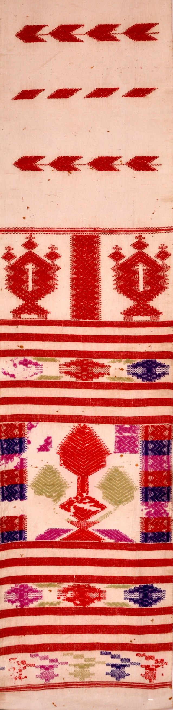
Рушник кролевецький тканий, обрядовий, початок ХХ ст.
Кролевець (Сумщина), початок ХХ ст. Знімок: Viktoriya Havrylenko, Wikimedia Commons.
Джерело: сторінка файлу · знімок: Viktoriya Havrylenko · права: CC BY-SA 4.0 · підпис на сторінці: «Рушник кролевецький тканий, обрядовий. Початок ХХ ст.»
Побачене
- Верхня третина — три рядки на голому полотні: «колоски»-стрілки, що всі летять ліворуч, між ними рядок косих рисок. Рядок займає 30–40 % червоного, між рядками — нуль. Це найтихіша частина рушника, і саме вона опиняється посередині, коли його вішають.
- Далі одразу густо, 40–70 %: два «вазони» обабіч суцільного червоного стовпа, пачки з трьох-чотирьох стрічок, і між пачками — вузькі кольорові пояски.
- Тут уже фабричні барвники: до ясного червоного (#B20C0D) додано фіалковий, малиновий і оливковий — і вони потекли. Малинові плями на білому поруч із фігурами — не узір, а фарба, що розійшлась під час прання. Через сто років це найживіше місце речі.
- Головна фігура — дерево з червоною кроною і двома оливковими листками; обабіч нього стовпчики в клітинку. Листок і крона виткані «ялинкою»: видно напрям кожної нитки.
- У густому кінці між пачками червоних стрічок лежать пояски з трьох розеток — червоної, фіалкової й малинової; оливкові рисочки між ними — листя. Червоні стрічки не рівні: кожна має ледь зубчастий край від перебору.
Виміри. На знімку рядок стрілок заввишки близько 2 % довжини, проміжок між рядками — близько 6 %: порожнього втричі більше, ніж узору. Рідке : густе по довжині ≈ 1 : 2.
Рушник початку ХХ ст.: три рядки на порожньому, далі одразу густо. Смуг 40, згори вниз; довжина риски — частка узору в смузі.
Колір із пікселів
За чим упізнають. Три рядки стрілок на порожньому полотні: їх досить, щоб упізнати рушник, навіть коли густого кінця не видно.

Настільник кролевецький тканий, обрядовий, 1892 рік
Кролевець (Сумщина), 1892. З колекції Музею кролевецького ткацтва, фото надала І. Пурига (за сторінкою джерела). Знімок: Viktoriya Havrylenko, Wikimedia Commons.
Джерело: сторінка файлу · знімок: Viktoriya Havrylenko · права: CC BY-SA 4.0 · підпис на сторінці: «Настільник кролевецький тканий, обрядовий, 1892 рік. З колекції Музею кролевецького ткацтва. Фото надала І.Пурига»
Побачене
- Протилежність рушникові: порожнього поля нема. Червоного рівно половина — 51–53 % у кожній смузі згори донизу. Око вже не знає, що фігура, а що тло: білі ромби на червоному чи червоні орли на білому.
- Сітка: ромби в шаховому порядку, у кожному другому — двоголовий орел, у решті — ромб із дрібною сіточкою всередині. Уздовж обох країв іде стовпчик маленьких птахів дзьобом до середини.
- Унизу, між узором і бордюром, виткано рядок: «1892 · ГС · В · П · Е · В ✚ РОСИХ» — рік, літери й хрест. Літери тієї ж східчастої будови, що й орли.
- Бордюр — зубці трикутниками назовні; за ним край полотна ще на палець білий.
Виміри. Частка червоного — 49–54 % у кожній із 20 смуг (схема нижче).
Настільник 1892 року: узору рівно половина по всій довжині. Смуг 20, згори вниз; довжина риски — частка узору в смузі.
Колір із пікселів
За чим упізнають. Рівні 50 на 50 і підпис із роком унизу. Це узір для столу, на який дивляться згори й зблизька; на стіні він рябить.

Рушники над іконою на покуті, меморіальний музей Пантелеймона Куліша «Ганнина Пустинь»
Мотронівка (Чернігівщина), експозиція музею. Знімок: Швітланьо, 2010, Wikimedia Commons.
Джерело: сторінка файлу · знімок: Швітланьо · права: CC BY-SA 3.0 · підпис на сторінці: «Panteleymon Kulish Museum Українська: Історико-меморіальний музей-заповідник «Ганнина Пустинь»»
Побачене
- Рушник висить не рівно: середина лягає на верх образа й ховається за ним, а два кінці розходяться донизу, як перевернута літера V. Найгустіший ярус опиняється на рівні очей людини, що сидить на лаві.
- Рушників три, один на одному: тканий кролевецький зверху, під ним білий вишитий із мереживним краєм. Видно сім кінців — і жодної середини.
- Порожнє поле, якого на розстеленому рушнику найбільше, на стіні зникає зовсім. Те, що в музейній вітрині — 55 % речі, у хаті — складка за іконою.
Колір із пікселів
За чим упізнають. Два кінці, що розходяться від однієї речі посередині. Обрамлюють не екран по колу, а одну річ — згори.
Вишитий рушник навколо ікони, Музей українського рушника (Переяслав)
автора знімка сторінка не називає, завантажено 2016. сторінка джерела. Права: CC BY-SA 3.0; лише посиланням, бо сторінка не називає автора.
_9.jpg){kind=link}
Вишитий рушник із червоними трояндами й чорним листям перекинуто через образ: середина біла й схована, кінці розходяться донизу й закінчуються густою смугою. За ним стіну вкрито тканими рушниками рівно, смугами, — і поруч із тим, що висить «живо», вони стають шпалерами.
Візуальний сенс
- Рушник красивий не узором, а тим, скільки довкола узору полотна. На взірці 1839 року понад половину довжини майже порожня; узір густішає лише до кінця. Усі попередні ескізи брали з рушника смугу орнаменту — тобто саме ту частину, якої в ньому найменше.
- Червоне старого рушника — припорошене, з білим усередині: марена на льоні (#A97975), а не #D00000. Ясне червоне — це вже фабрична нитка початку ХХ ст. Обидва справжні, але вони дають різний настрій: перше поруч із фото одягу мовчить, друге сперечається з червоною сукнею.
- Форма — східці. Перебір не вміє вести криву, тому і птах, і цифра, і вазон складені з прямокутничків. На екрані це переноситься без втрат: піксель і перебір — та сама сітка.
- Гине без матеріалу: серпанок (біла основа крізь червоне), патьоки барвника, нерівний край. Плоска заливка замість серпанку — і це вже наліпка.
Функціональний сенс для Люстерка
- Рушник живе у двох станах. Розстелений — довга річ із наростанням: тихий початок, густий кінець, унизу рік і літери. Повішений — складка посередині й два кінці обабіч однієї речі.
- Перше дає хід розмови з наростанням: що далі до образу, то густіше; кінець полотна — підпис із датою (як виткане «1839 · П М»), а не просто смуга. Зведення вже мало «кінець полотна» — взірець додає, що там стоять рік і ім'я.
- Друге дає спосіб показати одну річ: фото жінки чи образ тримає згори «перекинутий» рушник, кінці якого спускаються обабіч. Середини не видно — отже над фото нема нічого, крім складки.
- Три рядки стрілок на порожньому — готова форма для чекання збирання: рядок з'являється, між рядками порожньо, і всі стрілки летять в один бік.
Перенесення поруч зі взірцем
чекання, поки збирається образ
Чекання: три рядки на порожньому
зі взірця: Рушник кролевецький тканий, обрядовий, початок ХХ ст.
- Обводи стрілок і рисок зняті програмою зі знімка (сітка 88 клітин на ширину), колір — #B20C0D із того самого знімка, тло — колір його полотна.
- Порожнього між рядками втричі більше, ніж узору, — як на рушнику. Рядки з'являються по одному: збирання триває кілька хвилин, і кожен рядок — ще один переглянутий шар одягу.
- Чого бракує: на взірці рядків три, а кроків збирання буває більше; треба шукати на інших рушниках, які ще рядки стоять у порожньому полі.
одна річ під перекинутим рушником
Одна річ під перекинутим рушником
зі взірця: Рушники над іконою на покуті, меморіальний музей Пантелеймона Куліша «Ганнина Пустинь»; Рушник кролевецький тканий, обрядовий, початок ХХ ст.
- Так рушник висить на покуті в музеї Куліша: середина — складка над образом, два кінці розходяться обабіч. Обрамлено одну річ, а не екран.
- Працює для знайомства (фото жінки) і для готового образу. Поруч із фото одягу два червоні кінці — сильний сусід: з червоною чи картатою річчю вони сперечаються. Тому — лише в ті дві хвилини, коли на екрані одна головна річ, і вужчими, ніж тут.
- Чого бракує: вирізка зі знімка — не графіка продукту. Щоб це стало мовою, кінець треба перевести в обвід, як стрілки, і перевірити на справжніх фото з каталогу.
кінець полотна: густішає і підписується

Кінець полотна: густішає і підписується
зі взірця: Рушник кролевецький тканий, обрядовий, 1839 рік (фрагмент)
- Риски — виміряна частка узору в останніх 20 смугах рушника 1839 року, без округлення; колір — його вицвіла марена #A97975 на його ж полотні #E2DAD2.
- Підпис — обвід витканого «1839 · П М» з того самого знімка. У продукті на цьому місці стоять день, коли зібрано образ, і ім'я — збережений образ стає підписаною річчю, а не карткою в списку.
- Вицвілий колір поруч із фото одягу мовчить: це найтихіший із червоних, які знайшлись.
Чого не брати
- Суцільну смугу орнаменту вздовж краю екрана: у рушника так не буває, бордюр-шашечка йде лише вздовж густої частини.
- Чисте #FF0000 і заливку без просвітів.
- Двоголового орла: мотив чесний для Кролевця ХІХ ст., але сьогодні читається як чужий герб.
Сорочка: вишивка й мережка
оздоба там, де рука рухається; стан порожній
Що було в текстах. Fable: крій із прямокутників, уставка близько 25 см, оздоба на шві й на видноті. Claude: більшість вишивок — один-два кольори; решетилівське «білим по білому» — «рельєф і фактура замість кольору». Gemini й ChatGPT: мережка як шов завтовшки 1 px між частинами екрана.
Чого там не видно. Жодної сорочки. «Біле по білому» в показі стало блідим візерунком зірок на тлі; мережка — сірою лінією. Не видно, де саме на сорочці стоїть узір, скільки його і з чого складається «одна нитка».

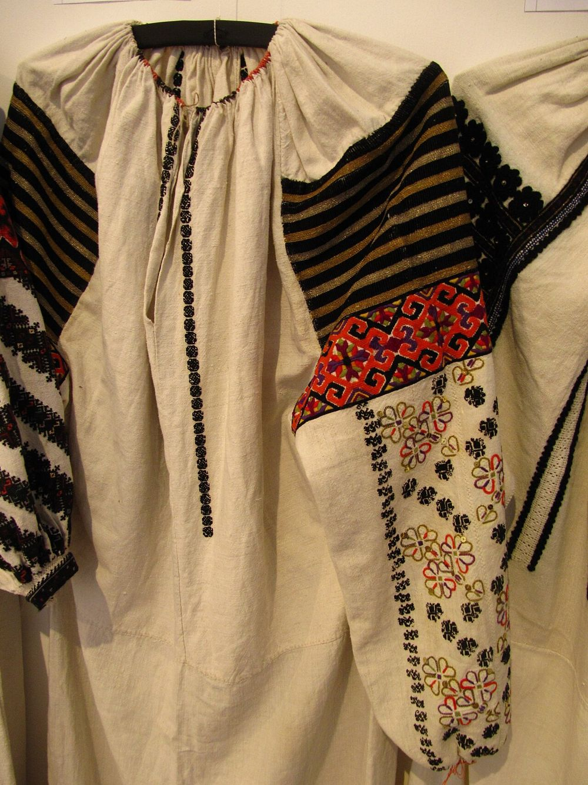
Жіноча сорочка до підточки, Заставнівщина (Буковина), початок ХХ ст.
Чернівецька обл., Заставнівський р-н, початок ХХ ст.; виставка в Музеї Івана Гончара, Київ (за підписом сторінки). Знімок: Riwnodennyk, 2012, Wikimedia Commons.
Джерело: сторінка файлу · знімок: Riwnodennyk · права: CC BY-SA 3.0 · підпис на сторінці: «Жіноча сорочка до підточки. Поч. 20 ст. Чернівецька обл. Заставнівський р. Виставка в музеї Івана Гончара (Київ).»
Побачене
- Рукав — три поверхи. Вгорі уставка: дев'ять-десять чорних вовняних смуг упоперек, між ними вохристо-золоті. Вона щільна, як тканина в тканині, і займає третину рукава.
- Під нею одна вузька смуга зовсім іншого кольору — червоно-оранжева (#A21908) з чорним ламаним меандром і фіалковими цятками. Це «морщинка»: єдине місце, де сорочка дозволяє собі другий колір і найдрібніший узір.
- Нижче — поле: полотно, по якому розсипано квітки контуром (вохра, рожеве, зелене) і чорні «лапки», що йдуть косими рядами. Тут узору 3–14 % площі проти 65–80 % в уставці.
- Стан майже голий: дві вертикальні чорні лінії з окремих цяток уздовж розрізу пазухи, і все. Горловина зібрана на нитку з чорно-червоним зубчиком.
Виміри. Чорна нитка вздовж рукава, 30 смуг від плеча вниз: уставка 67–80 %, перехід 36–53 %, поле 3–14 %. Висоти трьох поверхів на знімку — 32 : 13 : 55.
Чорної нитки на рукаві: щільна уставка, перехід, рідке поле. Смуг 30, від плеча до манжета; довжина риски — частка узору в смузі.
Колір із пікселів
За чим упізнають. Щільне вгорі, одна яскрава смуга, рідке внизу. Якщо всі три поверхи зробити однаково густими — це вже хустка, а не рукав.

Жіноча додільна сорочка, с. Мельники (Черкащина), кінець ХІХ ст.
Черкаська обл., Чорнобаївський р-н, с. Мельники, кінець ХІХ ст.; виставка в Музеї Івана Гончара. Знімок: Riwnodennyk, 2012, Wikimedia Commons.
Джерело: сторінка файлу · знімок: Riwnodennyk · права: CC BY-SA 3.0 · підпис на сторінці: «Жіноча додільна сорочка. Кінець 19 ст. Черкаська обл. Чорнобаївський р. с. Мельники. Виставка в музеї Івана Гончара (Київ).»
Побачене
- Одна нитка — червона, і більше нічого. Тексти казали «червоне з чорним»; тут чорного нема зовсім.
- Поле рукава — не хрестик і не ромби, а сітка з кілець: кожне кільце — розетка з восьми закручених петельок довкола хвилястого осердя, між кільцями — пряма перемичка з маленьким бантиком посередині. Лінія округла, як писана пером.
- Сітка прозора: узором зайнято близько третини, решта — полотно. Через це рукав здалеку рожевіє, а зблизька — біле з червоним мереживом.
- Уставка — одна щільна смуга з «ріжками» між двома східчастими краями, пришита навскіс; від неї сітка починається без жодного переходу.
- Горловина — зборки під червоним зубчиком; манжета — така сама смужка. Стан порожній.
Колір із пікселів
За чим упізнають. Червона сітка-мереживо, крізь яку видно полотно. Густий червоний килимок на грудях — це вже фабрична «вишиванка».

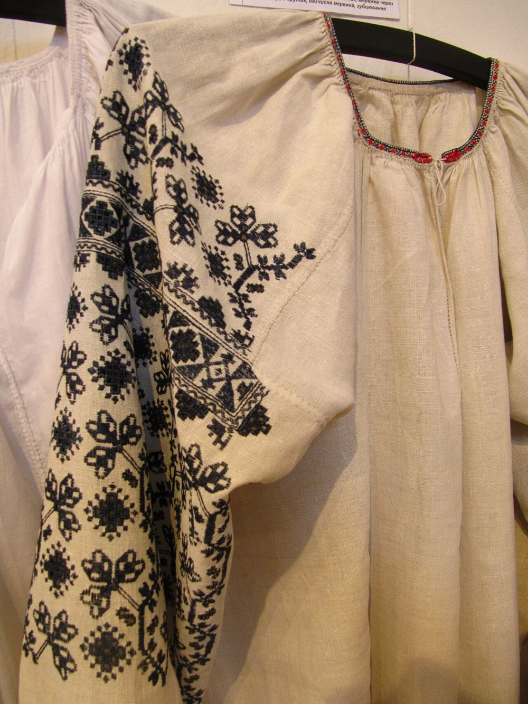
Жіноча додільна сорочка, Гадяччина (Полтавщина), початок ХХ ст.
Полтавська обл., Гадяцький р-н, початок ХХ ст.; виставка в Музеї Івана Гончара. Знімок: Riwnodennyk, 2012, Wikimedia Commons.
Джерело: сторінка файлу · знімок: Riwnodennyk · права: CC BY-SA 3.0 · підпис на сторінці: «Жіноча додільна сорочка. Поч. 20 ст. Полтавська обл. Гадяцький р. Виставка в музеї Івана Гончара (Київ).»
Побачене
- Одна нитка — синювато-чорна (#261E19), хрестиком. На рукаві чергуються дві фігури в шаховому порядку: трилистник і зірчаста розетка.
- Вони зроблені по-різному. Розетка — суцільна, східчаста, чорна пляма. Листок трилистника — лише обвід, а всередині лишено полотно, «вікно». Через це поле не важке: чорного й білого в кожній парі порівну.
- Уставка — смуга з ромбів між двома зубчастими лініями; нижче половина рукава біла.
- Уздовж шва, що з'єднує рукав зі станом, іде тонка мережка — рядок дірочок, а не вишита лінія. Шов не сховано, а показано.
- При горлі — тонка обшивка червоним і чорним; це єдине червоне на всій сорочці.
Колір із пікселів
За чим упізнають. Чорне на небіленому, фігури окремо одна від одної, шов — рядок дірочок.

Жіноча сорочка, Миргородщина (Полтавщина), кінець ХІХ ст.
Полтавська обл., Миргородський р-н, кінець ХІХ ст.; виставка в Музеї Івана Гончара. Знімок: Riwnodennyk, 2012, Wikimedia Commons.
Джерело: сторінка файлу · знімок: Riwnodennyk · права: CC BY-SA 3.0 · підпис на сторінці: «Жіноча сорочка. Кінець 19 ст. Полтавська обл. Миргородський р. Виставка в музеї Івана Гончара (Київ).»
Побачене
- Те, що тексти називали «білим по білому», тут не біле: нитка лише трохи світліша й кремовіша за сіро-бежеве полотно. Узір видно не кольором, а тінню.
- Тінь дають дві речі: рельєф лиштви (настил лежить над полотном) і вирізані дірочки, зібрані в сітки, — крізь них темніє те, що під сорочкою.
- Рукав укрито весь, від уставки до манжета: щільна смуга, шов, далі великі ромби зиґзаґом. Стан голий; на пазусі — одна вишита гілочка вохристою ниткою.
Колір із пікселів
За чим упізнають. Узір, який зникає на рівному світлі й проступає на косому. На екрані світла збоку нема — тому блідий візерунок на тлі цього не передає.

Жіноча сорочка, с. Суємці (Житомирщина), початок ХХ ст.
Житомирська обл., Баранівський р-н, с. Суємці, початок ХХ ст.; колекція Музею Івана Гончара, КН-19111 (за підписом сторінки). Знімок: Навка, 2012, Wikimedia Commons.
Джерело: сторінка файлу · знімок: Навка · права: CC BY-SA 3.0 · підпис на сторінці: «Жіноча сорочка з с. Суємці Баранівського району Житомирської області, поч. ХХ ст. Колекція Музею Івана Гончара, Київ (КН-19111). Сфотографовано на виставці "Українська вишиванка: традиції, стиль, свобода!"»
Побачене
- Тут нитка справді біліша за полотно: льон сірий, небілений (#8E886F), нитка — білена. Восьмикутні зірки лиштвою, у серці кожної — дев'ять дірочок 3×3.
- Уставка лежить між двома рядками мережки, під нею — дрібні зборки, «пухлики», притримані рядком зубчиків. Полотно зібране в об'єм: це шиття, а не малюнок.
- Видно кожну нитку полотна: воно грубе, з вузликами. Узір порахований по цих нитках — зірка рівна тому, що полотно є сіткою.
Колір із пікселів
За чим упізнають. Сіре полотно, біла зірка з темними дірочками. Саме звідси, а не з блідого тла, родом «фактура зірок».

Жіноча сорочка до підточки, с. Брідок (Буковина), початок ХХ ст.
Чернівецька обл., Заставнівський р-н, с. Брідок, початок ХХ ст.; виставка в Музеї Івана Гончара. Знімок: Riwnodennyk, 2012, Wikimedia Commons.
Джерело: сторінка файлу · знімок: Riwnodennyk · права: CC BY-SA 3.0 · підпис на сторінці: «Жіноча сорочка до підточки. Початок 20 ст. Чернівецька обл. Заставнівський р. с. Брідок. Виставка в музеї Івана Гончара (Київ).»
Побачене
- Та сама будова, що в сусідньої сорочки із Заставнівщини, інші барви: уставка — дев'ять винно-бордових вовняних смуг із білими проміжками.
- Морщинка тут зелена — єдина зелена річ на всьому вбранні — з білим ламаним узором. Біле в ній не вишите: це полотно, яке лишили невкритим.
- На грудях — вертикальні винні зиґзаґи з тонкою жовто-зеленою жилкою.
Колір із пікселів
За чим упізнають. Морщинка іншого кольору, ніж уся сорочка. Це правило, а не випадок: у двох сорочок з одного району вона різна, а місце те саме.
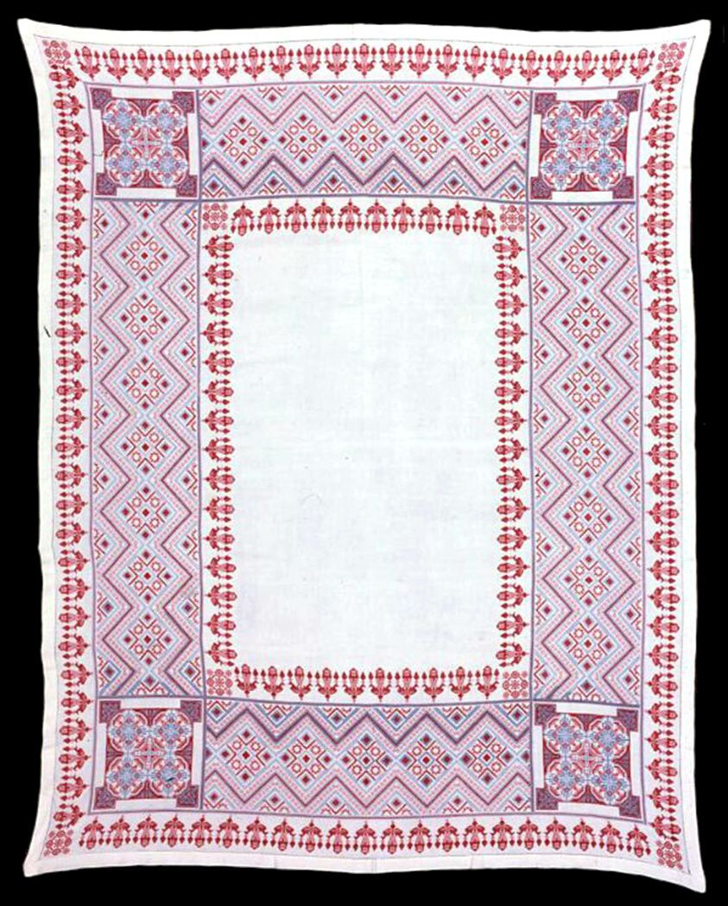
Скатертина, близько 1860 (каталог: «Україна або Югославія»)
Art Institute of Chicago, 1985.95: льон, вирізування й мережка, хрестик бавовною; 212,9 × 165,8 см; походження музей подає з двома варіантами, майстриня невідома. Знімок музею, суспільне надбання.
Джерело: сторінка файлу · знімок: Art Institute of Chicago · права: CC0 (суспільне надбання, за позначкою музею) · підпис на сторінці: «Tablecloth, c. 1860. Ukraine or Yugoslavia. Linen, plain weave; cut and drawn work embroidered with cotton yarns in Vandyke stitch; and embroidered with cotton yarns in cross stitch. 212.9 × 165.8 cm. Gift of Frances Rooz. 1985.95»
Побачене
- Єдина річ серед розглянутих, де узір справді йде рамкою. Але рамка тут не лінія по краю: вона забирає близько чотирьох п'ятих скатертини, а порожня середина — лише п'яту частину (39 % ширини на 50 % довжини).
- Рамка тришарова: зовні ряд червоних «пуп'янків» вістрям назовні, далі широка смуга зиґзаґів із ромбами — червоне з блакитним, — і знову ряд пуп'янків, уже вістрям до середини. У чотирьох кутах — квадрати з іншим узором, що зупиняють смугу, а не дають їй повернути.
- Червоне на знімку малинове, холодне (#AC6674), і поруч блакитне: здалеку все зливається в бузкове. Знімок старий, із чорним тлом; барви можуть бути зсунуті.
- Середина порожня, бо там стоять миски. Рамка на речі є там, де річ накривають чимось зверху.
Виміри. Порожня середина — близько 20 % площі; смуга рамки з кожного боку — близько 30 % ширини скатертини.
Колір із пікселів
За чим упізнають. Кутові квадрати, що зупиняють бордюр. Рамка, яка ширша за те, що вона обрамлює.
Візуальний сенс
- Сорочка не прикрашена рівно. Узір зібрано там, де рука рухається й де його видно, — на рукаві; стан, найбільша площа, порожній. Краса в цьому розподілі: багато тихого полотна і одне густе місце.
- Рукав має три поверхи з різною густотою: щільна уставка, вузький перехід, рідке поле. На буковинській сорочці це 32 : 13 : 55 за висотою і 80 % → 40 % → 5 % за чорною ниткою.
- Одна сорочка — одна нитка: чорна, червона або біла. Розмаїття дає не колір, а будова фігури: суцільна пляма поруч з обводом із «вікном», сітка з кілець, дірочки.
- Другий колір дозволено в одному місці — у вузькій смузі під уставкою, і там він найяскравіший на всій речі.
- «Біле по білому» — це тінь, а не блідий колір: рельєф настилу й дірочки, крізь які темніє. Без косого світла й без об'єму його не існує, тому плоске світле тло з блідим візерунком — не воно.
Функціональний сенс для Люстерка
- Порожній стан — це місце для фото. Знімок жінки чи речі стоїть на голому тлі, а все, що оздоблене, винесено туди, де є дія: на край і на «рукав» — бічну смугу з тим, що можна зробити.
- Три поверхи рукава — готовий порядок для «що я зрозуміла»: щільно й коротко — головне (нагода), одна яскрава смуга — умова, на якій тримається образ, далі рідко й дрібно — усе інше. Жінка одразу бачить, що стилістка вважає головним, і може це виправити.
- Одна нитка — правило для екрана з образом: усі позначки на ньому одного кольору, а другий колір з'являється один раз — на тому, що вимагає її рішення (сумнів, заміна, «купити чи ні»). Це та сама морщинка.
- Шов-мережка — рядок дірочок там, де дві частини зшито. У продукті шов є між тим, що сказала жінка, і тим, що додала стилістка; показати його рядком дірочок чесніше, ніж сірою лінією.
Перенесення поруч зі взірцем
«що я зрозуміла»: три регістри рукава
«Що я зрозуміла» у три поверхи
зі взірця: Жіноча сорочка до підточки, Заставнівщина (Буковина), початок ХХ ст.
- Висоти блоків — 32 : 13 : 55, зняті з рукава; кольори — його чорна вовна, вохра й червоно-оранжева морщинка. Ліворуч — сам рукав для звірки.
- Щільний верх несе нагоду, морщинка — одну умову, якої не можна порушити, поле — решту дрібно й рідко, зі зсувом через один, як «лапки» на рукаві.
- Чого бракує: чорна смуга на третину картки поруч із фото одягу важка. Буковинські барви — найгучніші з усіх сорочок; ту саму будову треба пробувати в одній нитці, як на Гадяччині.
одна нитка на річ
 чорна · Гадяччиналисток — обвід із вікном, розетка — суцільна
чорна · Гадяччиналисток — обвід із вікном, розетка — суцільна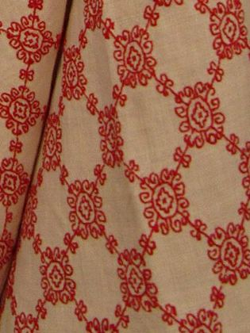
червона · Мельникисітка з кілець і перемичок, полотна дві третини біла · Суємцізірка видна тінню й дірочками
біла · Суємцізірка видна тінню й дірочкамиОдна нитка на річ
зі взірця: Жіноча додільна сорочка, Гадяччина (Полтавщина), початок ХХ ст.; Жіноча додільна сорочка, с. Мельники (Черкащина), кінець ХІХ ст.; Жіноча сорочка, с. Суємці (Житомирщина), початок ХХ ст.
- Три вирізки зі знімків без жодної домальовки. Чорна, червона й біла сорочки зроблені за одним правилом, а виглядають як три різні світи.
- У продукті нитка — це колір позначок одного образу. Її можна брати з палітри жінки: тоді «її» колір стає ниткою всіх її образів, а не кольором кнопки.
- Чого бракує: обводів. Сорочки на знімках висять зі складками, і програма не зніме з них рівну фігуру; потрібні знімки розстелених речей або схеми з альбомів узорів.
Чого не брати
- Блідий візерунок зірок на світлому тлі як «біле по білому»: на сорочці це тінь і дірочки, а не колір.
- Суцільну вишиту смугу на грудях чи довкола екрана: на старих сорочках стан порожній.
- Червоне разом із чорним як обов'язкову пару: з шести розглянутих сорочок такої пари нема на жодній.
- Тонку орнаментальну рамку довкола екрана: на єдиній речі з рамкою (скатертина) вона ширша за середину й стоїть там, де середину накривають посудом.
Плахта і стрій
шари, що заходять один на один, і пояс, який їх тримає
Що було в текстах. Fable (варіант «Стрій»): вбрання — комплекс шарів, кожен має місце й назву; образ — аркуш із постаттю й виносними підписами. Gemini й Fable: плахта — картата сітка, «шаховий порядок»; палітра як плахта — рядок основи й клітинки-пари; картка образу 60/40.
Чого там не видно. Ні плахти, ні вбраної постаті. З текстів плахта виходить шахівницею з рівних кольорових квадратів, а стрій — стосом смужок. Не видно, що шари перекриваються, чим вони різняться і що їх тримає разом.

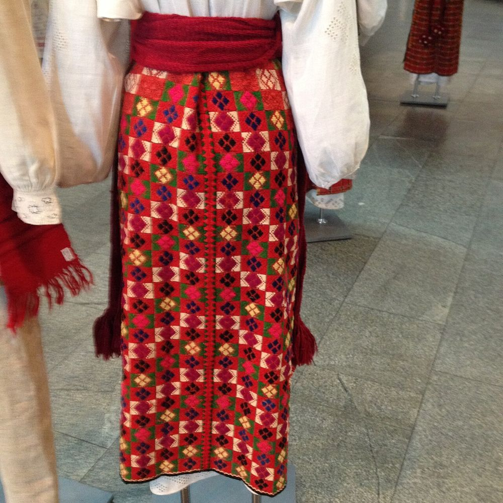
Плахта з крайкою (на манекені, зі спини)
Підпис сторінки — лише «Плахта»; час, місцевість і збірку сторінка не називає — невідомо. Знімок: Софо (Sofo), 2015, Wikimedia Commons, суспільне надбання.
Джерело: сторінка файлу · знімок: Софо (Sofo) · права: Public domain · підпис на сторінці: «Плахта»
Побачене
- Це не шахівниця з кольорових квадратів. Тло одне — червоне, його більше половини (близько 55 % площі). Клітину робить не колір, а те, що в ній стоїть: малий ромб із чотирьох «очок» — рожевих, темно-синіх, жовтих — і під ним пара трикутників, зелених або білих.
- Барви живуть цятками. Рожевого, жовтого й білого разом — менше п'ятої частини; темного (синє, чорне, зелене) — стільки ж. Через це плахта здалеку червона, а зблизька строката.
- На ширину вміщається дев'ять клітин. Посередині — прямовисний шов: плахту зшито з двох полотнищ, і шов не сховано, а пройдено грубою червоною ниткою зиґзаґом. Узір обабіч шва не збігається на півклітини.
- Верхня п'ята частина, під поясом, іншого кольору — рожево-оранжева, тканина тонша. Її ховає пояс, і вона на це й розрахована.
- Пояс — широка червона вовняна крайка, обгорнута довкола стану в кілька витків; кінці з китицями звисають обабіч нижче стегон. Він рівний, без узору, і це найбільша одноколірна пляма в усьому вбранні.
- Знизу з-під плахти визирає біла смужка подолу сорочки з дірчастим узором — на два пальці.
Виміри. Клітин на ширину — 9. Кольори плахти з пікселів: червоне тло ≈ 55 %, темне ≈ 19–27 % (з тінями складок), світле (рожеве, жовте, біле) ≈ 18 %.
Колір із пікселів
За чим упізнають. Спільне червоне тло, дрібні ромби в клітинах, шов посередині. Рівні кольорові квадрати — це скатертина в клітинку.

Полтавський стрій (на манекені, зі спини)
Підпис сторінки — «Полтавський стрій»; час і збірку сторінка не називає — невідомо. Знімок: Софо (Sofo), 2015, Wikimedia Commons, суспільне надбання.
Джерело: сторінка файлу · знімок: софо (Sofo) · права: Public domain · підпис на сторінці: «Полтавський стрій»
Побачене
- Шари не лежать стосом — вони заходять один на один. Хустка спадає з голови на третину спини поверх керсетки; керсетка накриває верх плахти; з-під плахти визирає сорочка. Кожен шар видно лише частково, і саме з цих частин складається постать.
- У кожного шару свій матеріал і свій голос: хустка — блискучий шовк, фіалкове з червоним і торочками; керсетка — матова темно-сіра вовна (#2F2B2E), зовсім без узору; плахта — щільна вовна в червоно-білу клітку; рукави — біле полотно з дірчастим шиттям. Блискуче, матове, строкате й прозоре не повторюються.
- Керсетка від талії розходиться віялом із семи-дев'яти складок («вуса») і закінчується чорною оксамитовою смугою із зубцями. Це єдиний шар, у якого форма важить більше за барву.
- Тут плахта інша, ніж на сусідньому взірці: справді шахівниця, але біла клітина не порожня — у ній дрібний червоний узір. Шість клітин на ширину.
- Найтихіший шар — найбільший (керсетка, половина постаті). Найяскравіший — найменший і найвищий (хустка).
Виміри. Від маківки до подолу: хустка 0–38 %, керсетка 13–65 %, плахта 65–94 %, поділ сорочки 94–100 %. Рукави сорочки — обабіч на всю висоту керсетки.
Колір із пікселів
За чим упізнають. Силует зі спини: дзвін керсетки, під ним вузька строката смуга, зверху пляма хустки. Упізнається без жодного орнаменту.

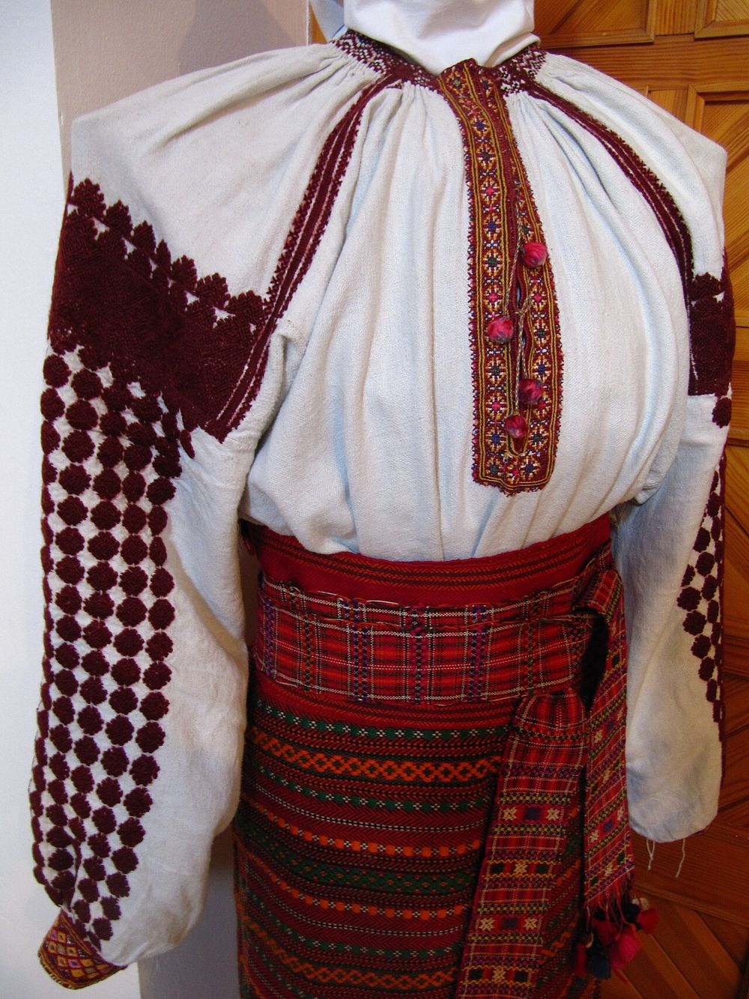
Жіночий костюм, Городенківщина (Покуття), кінець ХІХ – початок ХХ ст.
Івано-Франківська обл., Городенківський р-н; виставка в Музеї Івана Гончара (за підписом сторінки). Знімок: Riwnodennyk, 2012, Wikimedia Commons.
Джерело: сторінка файлу · знімок: Riwnodennyk · права: CC BY-SA 3.0 · підпис на сторінці: «Костюм жіночий. Кінець 19 ст. - початок 20 ст. Івано-Франківська обл. Городенківський р. Виставка в музеї Івана Гончара (Київ).»
Побачене
- Вишивка тут — об'єм: темно-вишнева вовна «кучерявим» швом, шорстка, як смушок. Уставка — суцільна темна смуга, далі рукав у шаховому порядку темних круглих «ґудзів» на білому, пів на пів.
- Пазуха — вузька прямовисна планка з дрібним оранжево-жовтим і фіалковим хрестиком, на ній три червоні кутасики, один під одним. Єдине дрібне й світле місце на всьому вбранні.
- Пояс — тканий, червоний, у тонку клітинку, з кінцем, що звисає спереду; під ним обгортка в темні поперечні смуги з оранжевими й зеленими рисками. Смуги обгортки лежать упоперек, клітинка пояса — дрібніша за них.
Колір із пікселів
За чим упізнають. Великий темний узір на рукаві проти дрібного світлого на грудях; пояс як межа між верхом і низом.

Листівка «Український стрій», 1917
Кольорова листівка 1917 року (за підписом сторінки: «Колюшки 1917»); хто на знімку й де знято — невідомо. Скан: Gabi Gofmann, Wikimedia Commons.
Джерело: сторінка файлу · знімок: Gabi Gofmann · права: CC BY-SA 3.0 · підпис на сторінці: «Український стрій: Почтівка.Український стрій.Колюшки 1917.»
Побачене
- Те, як стрій хотіли показати сто років тому: жінка стоїть упівоберта, рука в бік — щоб було видно рукав. Рукав білий із синьо-червоними гілками, і він займає більше місця, ніж обличчя.
- Намисто — не одна нитка, а десяток разків, що вкривають груди від шиї до пояса, з трьома золотими дукачами. Це найщільніше місце постаті.
- Керсетка червона, по краю — подвійна жовто-зелена облямівка, що обводить увесь силует тонкою лінією. З-під неї — смужка плахти в синьо-біло-червону клітку на долоню завширшки.
- Фарби листівки накладено поверх фотографії: вони рівні й яскравіші за справжні. Це вже показ строю, а не стрій.
Колір із пікселів
За чим упізнають. Розфарбована листівка — перший крок до сценічного костюма: всі барви однаково гучні.
Візуальний сенс
- Стрій гарний перекриттям: кожну річ видно частково, і частина каже про ціле. Двох пальців білого подолу досить, щоб знати, що під плахтою сорочка.
- Шари різняться матеріалом, а не лише барвою: блискуче, матове, строкате, прозоре. Найбільший шар — найтихіший, найменший — найяскравіший.
- Плахта — спільне тло, по якому барви розсипано цятками. Вона строката й цілісна водночас, бо червоного більше половини.
- Пояс — рівна одноколірна смуга між строкатим і білим. Він ділить постать і тримає вбрання; його кінці звисають.
- Гине, коли всі шари роблять однаково яскравими й рівними — як на розфарбованій листівці 1917 року.
Функціональний сенс для Люстерка
- Образ із речей каталогу — це шари, що перекриваються. Не колонка карток однакового розміру, а постать, де жакет закриває половину сукні, а взуття «визирає». Розмір плями відповідає тому, скільки речі видно на людині; тексти про «Стрій» мали шари, але рівними смужками.
- «Визирає» — окрема роль: річ, якої видно на два пальці (поділ, комір, манжет), але без якої образ інший. У продукті це місце для дрібниці, яку стилістка додала свідомо.
- Пояс — те, що тримає образ: нагода. Одна рівна смуга через усю постать із назвою нагоди, а її кінці — дві дії: «вдягну» і «не те».
- Плахта як палітра: тло — основна барва жінки, цятки — ті, що їй до лиця в малій кількості. Видно одразу не лише які барви, а й скільки кожної.
Перенесення поруч зі взірцем
образ як стрій: шари заходять один на один
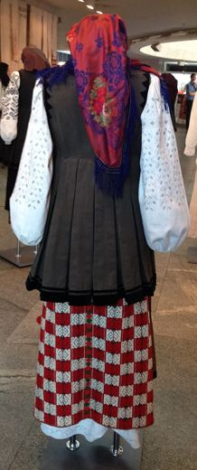
Образ як стрій
зі взірця: Полтавський стрій (на манекені, зі спини)
- Висоти й перекриття шарів зняті з постаті на знімку; кольори — з її керсетки, хустки, плахти й сорочки.
- Найбільший блок — найтихіший, яскравий — малий і вгорі; унизу смужка «визирає». На такій схемі одразу видно, яку річ замінюють і що вона закриває.
- Чого бракує: у каталозі речі — це фото на білому тлі, а не шари тканини. Треба пробувати зі справжніми знімками: чи тримається перекриття, коли замість кольорових плям стоять фотографії.
палітра: барва живе цяткою на спільному тлі
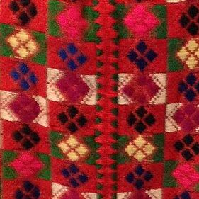
Палітра-плахта
зі взірця: Плахта з крайкою (на манекені, зі спини)
- Будова клітини — з вирізки ліворуч: спільне червоне тло, ромб посередині, знизу пара трикутників. Кольори — з пікселів тієї самої плахти.
- Жінка бачить свої барви не рівними зразками, а так, як їх носять: одна основна, решта — цятками.
- Чого бракує: ромб і трикутники тут складено з прямокутників CSS за вирізкою, а не знято обводом — складки на знімку не дають рівної фігури. Потрібен знімок розстеленої плахти з музейної збірки.
Чого не брати
- Шахівницю з рівних кольорових квадратів під назвою «плахта».
- Шари однакової висоти стосом: на постаті вони перекриваються, і найбільший — найтихіший.
- Рівну яскравість усього — це мова листівки й сцени.
Кераміка: косівська кахля й піч
три поливи на вершковому тлі; колір не слухається лінії; піч — стіна з окремих сцен
Що було в текстах. Claude і Fable згадують косівську мальовану кераміку як факт (зелене й жовте, продряпаний контур, «сльози» поливи); Gemini взяв з опішнянської два кольори — «теракота» #9E472A для головної кнопки і «полива-зелень» #2D5A4C. Жодної кахлі чи миски ніхто не відкривав.
Чого там не видно. Яке те зелене насправді, що намальовано і як кахлі складаються в піч.
Не знайдено. Опішнянська миска й фляндрівка: два знімки з Wikimedia Commons («Opishnia ХІХ», «Фляндрівка 01») не віддались через обмеження сервера зображень; гутного скла у відкритих збірках не знайшла. «Теракота» і «полива-зелень» Gemini лишились неперевіреними на речі.

Петро Кошак. Кахля «Олень», Пістинь, 1911
Глина, розпис, полива. Знімок музею, Wikimedia Commons, суспільне надбання. Розмір кахлі сторінка не називає — невідомо.
Джерело: сторінка файлу · знімок: Original: Piotr Koshak (1864—1940/1941) Photograph: National Museum of Hutsulshchyna and Pokuttia Folk Art · права: Public domain · підпис на сторінці: «П. Кошак. Олень. Изразец. Глина, роспись, глазурь. Пистынь. 1911. Национальный музей народного искусства Гуцульщины и Покутья имени И. Кобринского»
Побачене
- Два олені стоять один проти одного, носами до рослини посередині, з якої виростають три великі квітки-розети. Це та сама будова, що на київських колтах за сімсот років до того: двоє дзеркально обабіч дерева.
- Барв три, і більше нема: мідно-зелена (#36C391, прозора й яскрава), вохриста жовта (#C8B949) і коричневий контур (#68664D). Тло — вершкове (#F5F3D8), його близько третини.
- Колір не тримається контуру. Зелене розпливається за лінію листка плямою, жовте стікає патьоками від верхнього краю вниз. Контур продряпано до випалу, поливу налито потім — і вона пішла, куди пішла. Від цього річ жива; обведи акуратно — буде розмальовка.
- Тіла оленів усіяні зеленими цятками по жовтому, роги — як гілки рослини. Звір і рослина зроблені з того самого.
- По краю кахлі — рамка з коричневих крапок, нерівних, кожна інша. Олені не однакові: лівий нижчий, у правого довша шия.
Виміри. Нижня половина кахлі — олені, верхня — квіти. Вісь рослини майже посередині, зсунута вліво. Вершкового тла ≈ 30 %, зеленого разом із розмитим ≈ 19 %, жовтого ≈ 7 %.
Колір із пікселів
За чим упізнають. Яскраве прозоре зелене з жовтими патьоками на вершковому — і те, що колір виходить за лінію.

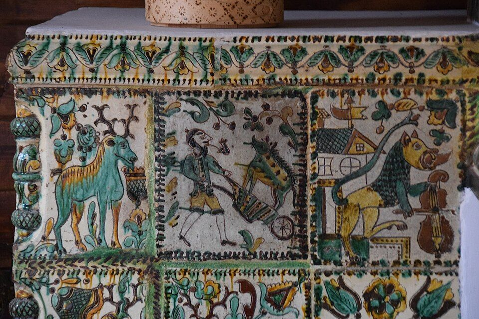
Гуцульська піч із мальованих кахлів (кут печі з карнизом)
Знімок: Lantuszka, 21.08.2017, Wikimedia Commons, CC BY-SA 3.0. Місце, майстра й час печі сторінка не називає — невідомо. Знято в темній хаті: кольори на знімку темніші й сіріші, ніж у кахлі Кошака.
Джерело: сторінка файлу · знімок: Lantuszka · права: CC BY-SA 3.0 · підпис на сторінці: «Traditionally painted Hutsul stove tiles»
Побачене
- Піч — це стіна з окремих картин. Кожна кахля — своя сцена у своїй рамці з крапок: олень біля вазона; чоловік із люлькою везе тачку, за ним цап; лев грає на басолі перед хатою з вікном і прапорцем. Сцени не пов'язані між собою і не повторюються.
- Єдине, що повторюється, — карниз угорі: довга смуга однакових квіток-дзвоників із листям навхрест. Повтор тримає край, усередині — свобода.
- Між кахлями — зелені шви: полива затекла в стик. Кут печі замикають точені колонки з шишками.
- Серед квітів і звірів — буденне: тачка, люлька, хата з фіранкою. Майстер малював те, що бачив, і смішне не боявся.
Виміри. Кахля ≈ 0,88 : 1 (трохи вища, ніж широка). Карниз заввишки ≈ 0,28 висоти кахлі. Рамка з крапок ≈ 1/20 ширини кахлі.
За чим упізнають. Рамка з крапок довкола кожної сцени і смуга однакових квіток над ними.

Олекса Бахматюк. Кахля «Скрипаль», Косів, бл. 1870
Wikimedia Commons, суспільне надбання. Дісталась лише мала копія (330 пікселів): подробиці штриха не роздивлено.
Джерело: сторінка файлу · знімок: Олекса Бахматюк · права: Public domain · підпис на сторінці: «Олекса Бахматюк. Кафель “Скрипач”.около 1870 року»
Побачене
- Скрипаль у зеленому каптані й жовтих штанях стоїть біля столу з пляшками; над ним квітка, більша за нього самого. Людина й орнамент — в одній рамці, одного розміру, жодне не тло для іншого.
- Рамка — навскісні мазки-листки, не крапки, як у Кошака: у кожного майстра свій край, за ним і впізнають руку.
Колір із пікселів
За чим упізнають. Невідомо, чи впізнала б без підпису: мала копія.
Візуальний сенс
- Косівська кахля впізнається за трьома барвами на вершковому й за тим, що колір тече за контур. Перше переноситься на екран прямо (чотири кольори з пікселів), друге — ні: розмиту пляму треба або сфотографувати, або не чіпати. Намальована «під поливу» вона стає сувеніром.
- Зелене Кошака (#36C391) — зовсім не «полива-зелень» #2D5A4C із роботи Gemini: воно світле, прозоре й холодне, майже м'ятне. Поруч із фото одягу воно гучне; для дрібної позначки годиться, для тла — ні.
- Сильніша за мотив — будова печі: рамка з нерівних крапок довкола кожної сцени і один повторюваний карниз над усіма.
Функціональний сенс для Люстерка
- Збережені образи. Піч — готова форма добірки: кожен образ — окрема кахля у своїй рамці, поруч, без спільного сюжету; зверху — карниз, один на всіх. Вона й росте як піч: рядами.
- Сумнів і заміна речі. Двоє обабіч рослини — удруге після колтів: річ і її заміна стоять дзеркально, між ними те, заради чого порівнюють.
- Відгук словами. У кахлі поруч із квіткою є тачка й люлька. Розмова про одяг теж може мати буденне й смішне поруч із гарним — це тон, а не оздоба.
Перенесення поруч зі взірцем
збережені образи: піч із кахлів

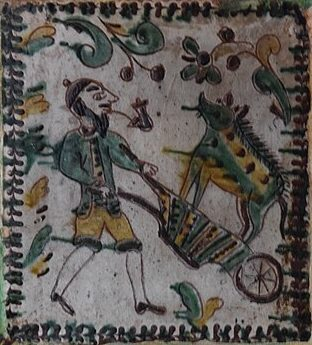
Збережені образи — піч
зі взірця: Гуцульська піч із мальованих кахлів (кут печі з карнизом); Петро Кошак. Кахля «Олень», Пістинь, 1911
- Карниз і перша кахля — вирізки зі знімка печі. Решта — порожні кахлі тих самих пропорцій (0,88 : 1), карниз 0,28 висоти кахлі; тло й колір крапок — із кахлі Кошака.
- Рамку з крапок тут зроблено рівною — і видно, чого бракує: нерівності руки. Для справжнього екрана рамку треба знімати з кахлі.
Чого не брати
- Зелене й жовте як кольори кнопок «під кераміку»: без вершкового тла й патьоків це просто зелена кнопка.
- Оленів, левів і скрипалів як ілюстрації: вони авторські, і за кожним — рука конкретного майстра.
- «Теракоту» #9E472A як українську: на жодному з роздивлених взірців такого кольору нема.
Кричевський: будинок Полтавського земства
оздоба високо, під руками — спокійна стіна; скошений кут живе у шибці
Що було в текстах. Усі роботи називають Василя Кричевського батьком українського модерну й беруть від нього одне — «вікно Кричевського», скошені кути (`--ск: 16px`): ними зрізали картки, кнопки й аркуші. Зведення відкинуло скіс як прикрасу без роботи.
Чого там не видно. Самої будівлі: де на ній той скіс, скільки його, з чого складено стіну і що робить оздоба.

Потрійне вікно будинку Полтавського губернського земства (тепер краєзнавчий музей), арх. В. Кричевський, 1903–1908
Знімок фасаду: Batsv, 13.09.2015, Wikimedia Commons, CC BY-SA 4.0. Роки будівництва й автора майоліки сторінка знімка не називає — узято із загальновідомого про будівлю, на сторінці — «невідомо».
Джерело: сторінка файлу · знімок: Batsv · права: CC BY-SA 4.0 · підпис на сторінці: «uk:Будинок Полтавського губернського земства ( Полтавський краєзнавчий музей ), Полтава , пл. Конституції , 2»
Побачене
- Стіна не одного кольору. Вона складена з цегли п'яти близьких тонів, покладеної без порядку: три пісочні (#DDBFA6, #EAD0BE, #CBAD99) дають дві третини, майже біла (#EFE4E0) — приблизно кожна восьма, рожева (#BF9388) — кожна дванадцята. Здалеку це читається як тканина з непрофарбованою ниткою, а не як мур.
- Оздоба зібрана вгорі, куди рука не дістає: над кожним вікном трикутний щипець із майоліковою вставкою (темно-червоне тло #896156, на ньому вазон, півень, знову вазон — зелене, жовте, біле), вище — пояс синьо-білих розет із вазами. Нижче підвіконня — жодної прикраси.
- Три вікна розділяють кручені керамічні колонки кольору вершків із кобальтовими (#121227) базою й верхом і вузькими жовтими кільцями. Це єдине місце, де на фасаді є чистий насичений колір, і його дуже мало — чотири вузькі стовпчики.
- Скошений кут тут є, але не там, де його шукали: зрізано не стіну й не вікно, а шибки нижніх стулок — вісім кутів кожної, зріз десь п'ята частина ширини. Над ними й під ними — звичайні квадратні шибки. Скіс — виняток серед прямих кутів, одна смуга на все вікно.
- Щипці над вікнами не однакові: у середньому — птах, у крайніх — вазони, і ті два теж різні. Повтор тримає форма трикутника, а не малюнок.
Виміри. Щипець заввишки ≈ 0,39 висоти вікна. Колонка до вікна за шириною ≈ 1 : 4,6. Цеглина ≈ 2,2 : 1, перев'язка на пів цеглини. Скошені шибки — одна смуга з трьох у стулці.
Колір із пікселів
За чим упізнають. Строката пісочна цегла й три гостроверхі щипці з майолікою над вікнами. Прибрати меланж — лишиться звичайний цегляний дім.

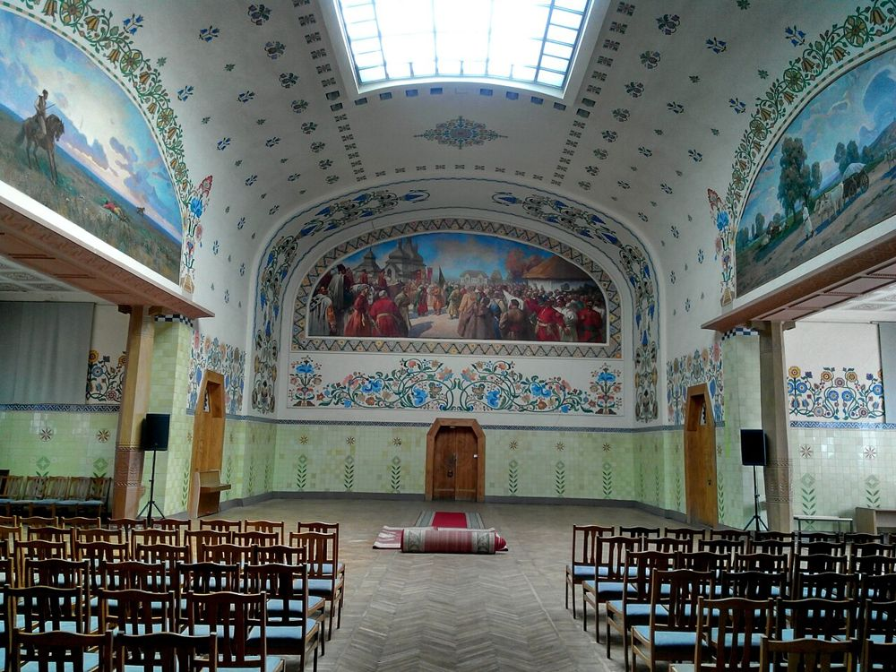
Головна зала будинку Полтавського губернського земства
Знімок: Motik20071, 29.04.2018, Wikimedia Commons, CC BY-SA 4.0. Розписи зали — С. Васильківський, М. Самокиш (за загальновідомим; сторінка знімка авторів не називає).
Джерело: сторінка файлу · знімок: Motik20071 · права: CC BY-SA 4.0 · підпис на сторінці: «Будинок земства , Полтава , пл. Конституції, 2»
Побачене
- Зала поділена по висоті на три пояси з різною густотою. Склепіння біле, по ньому рідко розсипано дрібні сині квітки — так само, як «поле» на рукаві сорочки. Нижче — картини в півкруглих нішах. Ще нижче, на висоті людини, — світло-зелена кахля (#7E8B78 на знімку), по одній малій квітці на плитку.
- Картина сидить у дузі, і орнамент іде тільки по дузі та смугою під картиною (синьо-зелена лоза по білому). Сама картина орнаменту не має, рама — це й є оздоба.
- Двері мають зрізаний верх — трапецію; це той самий скіс, що в шибках, і знову він лише в прорізі, крізь який проходять.
- Чим ближче до рук і очей людини, тим спокійніша поверхня; чим вище — тим більше малюнка. У наших показах було навпаки: орнамент клали на кнопки.
Виміри. Торцева стіна знизу вгору: кахля ≈ 33 %, смуга лози ≈ 23 %, картина в дузі ≈ 44 %. Картина в дузі ≈ 2,6 : 1.
Колір із пікселів
За чим упізнають. Картина в дузі з орнаментом по дузі і зелена кахля внизу.
Візуальний сенс
- Краса земства — не в мотиві, а в розкладі: спокійна тепла стіна з ледь помітним меланжем, уся оздоба піднята вгору, насиченого кольору — чотири вузькі стовпчики. На екран переноситься саме цей розклад і меланж; майоліка, кручені колонки й розпис без матеріалу стають листівкою.
- Меланж із п'яти близьких тонів — готова відповідь на «плаский беж»: тло, яке не одноколірне, але й не візерунок, і яке не сперечається з фото одягу.
- Скошений кут має сенс лише як рідкісний виняток у прорізі — у «вікні», крізь яке дивляться на образ. Зрізаний на всьому підряд, він і став прикрасою, яку відкинуло зведення.
Функціональний сенс для Люстерка
- Палітра. Стіна показує, як багато кольорів живуть разом: основи багато, світлого — кожна восьма, яскравого — кожна дванадцята. Палітру жінки можна показати муром, де частка цеглин — це частка кольору в її образах, а не рядком однакових кружалець.
- Образ із речей каталогу. Картина в дузі, орнамент лише по рамі, під нею смуга — підпис, а нижче спокійна «кахля» з діями. Фото образу лишається чистим.
- Знайомство й фото. Скошена шибка — рамка для фото жінки: одне «вікно» зі зрізаними кутами серед прямокутних карток.
Перенесення поруч зі взірцем
палітра: чого багато, а що — акцент
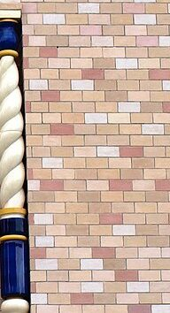
Палітра муром
- Дев'ять рядів цегли 2,2 : 1 з перев'язкою на пів цеглини, як на вирізці. Кольори й частки — з пікселів стіни: три пісочні тони, світла кожна восьма, рожева кожна дванадцята.
- У продукті на місці цих п'яти тонів стоять кольори жінки, а частка цеглин каже, чого в її образах багато, а що — акцент.
образ із речей: три пояси зали
На зустріч із подругами, тепло і без підборів
Образ у дузі, дії на кахлі
зі взірця: Головна зала будинку Полтавського губернського земства
- Три пояси торцевої стіни зали з їхніми частками: 44 % образ, 23 % смуга, 33 % спокійний низ. Смуга лози — вирізка зі знімка, не малюнок.
- Орнаменту на кнопках нема: він лишився в смузі над ними.
Чого не брати
- Скіс на кожній картці й кнопці: у будівлі це одна смуга шибок і дверний проріз.
- Майоліку, вазони й півня як картинки: у щипці вони тримаються на глині й висоті, на екрані це наліпка.
- Кобальт як колір інтерфейсу: у Кричевського його чотири вузькі стовпчики на весь фасад.
Золото й емаль
золото — поле, а не лінія; двоє обабіч осі
Що було в текстах. У показі «Полотно й нитка» є змінна `--золото`, названа «скіфсько-мозаїчним»: тонкі золоті лінії й акценти. Зведення віднесло її до прикрас, які нічого не несуть, і відкинуло. Жодного золотого предмета тексти не називали.
Чого там не видно. Якого кольору давнє золото, скільки його в речі і що на ньому стоїть.
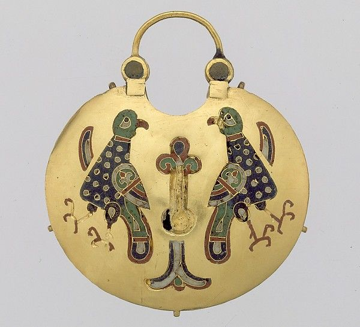
Колт із двома птахами обабіч дерева життя, Київська Русь, бл. 1000–1200
Скронева підвіска; золото, срібло, перегородчаста емаль; 5,3 × 5 см. The Metropolitan Museum of Art, 17.190.679, Open Access. Майстер невідомий.
Джерело: сторінка файлу · знімок: The Metropolitan Museum of Art · права: CC0 (Open Access, суспільне надбання) · підпис на сторінці: «Kyivan Rus’. Gold, silver, and enamel worked in cloisonné. 5.3 × 5 × 1.5 cm. The Metropolitan Museum of Art, 17.190.679»
Побачене
- Золото тут — тло. Гладке, порожнє, воно займає близько чотирьох п'ятих диска; на ньому, як на аркуші, стоять три фігури. Тонких золотих ліній-прикрас нема: лінії — це перегородки між барвами всередині фігур.
- Колір золота — блідий, солом'яний (#CFB776, у світлі #EBD593, у тіні #B49E65), матовий. Він ближчий до небіленого льону, ніж до жовтого.
- Два птахи стоять дзеркально, дзьобами до дерева посередині. Тіло — темно-синє, майже чорне, всіяне жовтими цятками; крило й хвіст — зелене з цегляно-червоним і білим. Барв п'ять, і кожна — малими комірками.
- Лапи птахів не залито емаллю: їх лише обведено червоним по золоту. Найлегше місце фігури — там, де вона торкається землі.
- Диск не круглий: згори виїмка півмісяцем і дужка на двох завісах. Річ висіла біля скроні, по одній з кожного боку обличчя — сама була парою.
- Посередині дірка, емаль місцями випала. Видно, що під барвою — те саме золото.
Виміри. По ширині диска: край 13 %, птах 27 %, дерево 15 %, птах 27 %, край 13 %. Емалі — близько п'ятої частини площі.
Колір із пікселів
За чим упізнають. Двоє обабіч одного, дзеркально, на порожньому світлому диску з виїмкою.
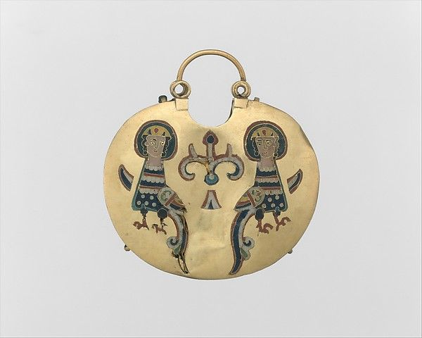
Колт із двома сиринами обабіч дерева життя, Київська Русь, ХІ–ХІІ ст.
Скронева підвіска; золото, перегородчаста емаль; 6 × 5,7 см. The Metropolitan Museum of Art, 17.190.680, Open Access. Майстер невідомий.
Джерело: сторінка файлу · знімок: The Metropolitan Museum of Art · права: CC0 (Open Access, суспільне надбання) · підпис на сторінці: «Kyivan Rus’. Cloisonné enamel, gold. 6 × 5.7 × 1.4 cm. The Metropolitan Museum of Art, 17.190.680»
Побачене
- Та сама будова: двоє дзеркально, між ними паросток. Тут у птахів жіночі обличчя в німбах, і вони дивляться не одна на одну, а на глядача.
- Хвости довгі, загнуті назовні, як дужки, — вони замикають композицію знизу. Дерево зведено до знака: тризуб із завитками і трикутник під ним.
- Порожнього золота ще більше, ніж на колті з птахами; диск пом'ятий, і вм'ятини видно як тіні на рівному полі.
Колір із пікселів
За чим упізнають. Обличчя в колі, повторене двічі. Найближче до «люстерка» з усього, що знайшлось: одне лице й друге таке саме навпроти.
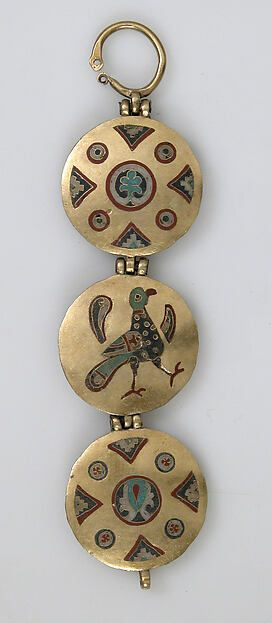
Ланцюг із бляшок із птахом і геометричним узором, Київська Русь, 1000–1200
Прикраса вбрання; золото, перегородчаста емаль; 11,6 × 2,4 см. The Metropolitan Museum of Art, 17.190.681, Open Access. Майстер невідомий.
Джерело: сторінка файлу · знімок: The Metropolitan Museum of Art · права: CC0 (Open Access, суспільне надбання) · підпис на сторінці: «Kyivan Rus’. Cloisonné enamel, gold. 11.6 × 2.4 × 0.5 cm. The Metropolitan Museum of Art, 17.190.681»
Побачене
- Три круглі бляшки на завісах: узор — птах — узор. Геометричні бляшки однакові: коло з трилисником у центрі, чотири трикутники навхрест і чотири цятки між ними. Птах стоїть між ними, як слово між двома розділовими знаками.
- Завіса між бляшками — видима частина речі: два вушка й штифт. Ланцюг гнеться саме там.
Колір із пікселів
За чим упізнають. Ритм «знак — образ — знак» з круглих однакових ланок.
Візуальний сенс
- Давнє золото красиве тим, що його багато й воно порожнє. Це тло, тепле й бліде, а не тонка блискуча лінія. Відкинуте в показі «золото» було якраз лінією.
- Барва на золоті — малими комірками, і її п'ята частина. Найтемніше (синє) стоїть поруч із найсвітлішим (жовті цятки), тому фігуру видно з відстані руки.
- Композиція — дзеркало: двоє однакових обабіч осі. Вісь не порожня — на ній росте дерево.
- Гине, коли золото роблять блискучим градієнтом або тонким контуром: тоді це вже подарункова упаковка.
Функціональний сенс для Люстерка
- Двоє обабіч осі — готова форма для сумніву й заміни: річ, що є в образі, і та, що пропонують замість неї, стоять дзеркально, а між ними — те, заради чого вибирають (нагода). Те саме для «купити чи ні»: річ із крамниці навпроти тієї, що вже є в шафі.
- Дзеркальна пара — пряма мова назви продукту: люстерко показує друге таке саме навпроти. Цього не було в жодній із шести робіт.
- Бліде золото як тло — для одного стану, а не для всього продукту: те, що жінка зберегла. Солом'яний колір близький до льону й поруч із фото одягу не кричить.
- Ланцюг «знак — образ — знак» — порядок для збережених образів: між образами стоять однакові тихі ланки, і стрічка не зливається.
Перенесення поруч зі взірцем
сумнів: річ і заміна — дзеркальна пара


Сумнів: дзеркальна пара
зі взірця: Колт із двома птахами обабіч дерева життя, Київська Русь, бл. 1000–1200
- Птах і дерево — вирізки зі знімка колта; правий птах — дзеркальне відбиття лівого. Тло — колір його золота з пікселів, пропорції по ширині — з диска.
- На місці птахів стоять дві речі з каталогу, на місці дерева — нагода або те, з чим річ носитимуть.
- Чого бракує: фото двох різних речей не дзеркальні. Треба перевірити на справжніх парах, чи тримає вісь композицію, коли обабіч неї різне.
Чого не брати
- Тонкі золоті лінії й золотий текст: на колтах золото — поле.
- Яскраво-жовте чи градієнт «під метал»: золото на знімках солом'яне й матове.
- Сиринів і святих як мотив: це церковне й княже, а не щоденне.
Як це вже переносили
сучасні українські роботи — лише посиланням, права авторів діють
Що було в текстах. Усі чотири роботи називали сучасні бренди й шрифти (Banda, Gunia, Bevza, Baginskiy, шрифти за Нарбутом і скорописом, «Національні парки») як доказ, що українське можна перенести без шароварщини. Зображень не було; Claude наводив Нову пошту × Etnodim «Взори» як приклад, чого уникати.
Чого там не видно. Що саме ці роботи взяли з першоджерела, а що відкинули, — і чи лишилось у них щось, окрім мотиву.
Brun'ka — косметика (рушник)
Gutsulyak.Studio (Юрко Гуцуляк), Київ, 2017. сторінка джерела · зображення. Права: права студії діють — лише посиланням.

Білий тюбик, на ньому одна червона фігура — «вазон» із квіткою, птахами й цятками, намальований рівною лінією; під нею дрібний сірий напис. Червоного — приблизно десята частина поверхні, решта біла. Узято з рушника те саме, що видно на кролевецькому взірці: одна фігура й багато порожнього. Відкинуто тканину: лінія гладка, без східців і без просвітів — тому це знак, а не рушник.
Національні парки України: закодована айдентика (вишивка)
Saatchi & Saatchi Ukraine, концепт Коста Шнайдер, 2018. сторінка джерела · зображення. Права: права агенції діють — лише посиланням.

На темному нічному фото в ряд стоять дев'ять «дерев», складених із квадратиків-хрестиків: кожне іншої висоти, ширини й барв, під ними ламана лінія з тих самих квадратиків. Від вишивки взято одиницю — хрестик — і правило «фігура з клітинок на осі». Барви неонові, на чорному: тут уже нічого від полотна. Працює те, що знак щось означає (у кожного парку свій), а не те, що він «народний».
Gunia Project — блузи за наївними рушниками з Музею Гончара
Gunia Project (Наталія Каменська, Марія Гаврилюк), 2025. сторінка джерела · зображення. Права: права бренду й видання діють — лише посиланням.

Дві білі блузи; вишивка чорною лінією лише на рукавах — місяць, зірки, рука з гілкою, — стан порожній, на одній ще маленький бантик на кишені. Те саме правило, що на сорочках із Музею Гончара: одна нитка, оздоба на рукаві. Малюнок узято не з орнаменту, а з наївних рушників: він оповідний, нерівний, «від руки».
Ruslan Baginskiy, TSVIT — золотий вінок довкола обличчя
Ruslan Baginskiy, знімки Synchrodogs, рік сторінка не називає. сторінка джерела · зображення. Права: права бренду й фотографів діють — лише посиланням; на знімку людина.

Усе чорне — гольф і каптур, — і лише довкола обличчя щільний вінок із золотих квітів. Золото стоїть там само, де колт: при скроні, обрамлюючи лице. Тло — небо від блакитного до бузкового. Сильне тим, що прикраса одна й знає своє місце.
Klynok — шрифтова система за скорописом
Катерина Корольовцева (ESAD Amiens), рік сторінка не називає. сторінка джерела · зображення. Права: права авторки діють — лише посиланням.

Заголовкове накреслення — дуже вузьке й високе, літери стоять щільно й заходять одна в одну («ІВАН МАЗЕПА» зібрано в одну пляму), кінці штрихів гострі, клинцем; у «У» й «р» довгі хвости під рядок. Поруч текстове накреслення — спокійна антиква — і курсив із живим нахилом. Зі скоропису взято не форми літер, а щільність і розмах, і дикість лишено тільки заголовкам. Картка — біле поле в скошеній малиновій рамці на чорному.
Zakon — «національний шрифт» (Нарбут, Кричевський)
Олексій Чекаль, Геннадій Заречнюк, Дмитро Растворцев, Андрій Шевченко, 2026. сторінка джерела · зображення. Права: права авторів і видання діють — лише посиланням.

Жовті літери на синьому: антиква з упізнаваними нарбутівськими рисами — «к» із піднятою гілкою, «у» з завитком, «й» із прапорцем угорі; окремі літери винесено в кола як зразки. Шрифт тихий і діловий; гучне тут — державні жовте й синє, а не літери.
Olkom — упаковка масла й пасти (петриківка)
Gutsulyak.Studio (Юрко Гуцуляк), 2020. сторінка джерела · зображення. Права: права студії діють — лише посиланням.

Дві пачки — бірюзова й темно-синя; білим по одному кольору — вінок із «цибульок» і пір'їстих листків довкола червоного овалу з назвою, написи йдуть по колу. Від розпису взято мазок-краплю й симетрію, барви зведено до однієї плюс біла. Стримано; але вінок суцільний, порожнього майже нема.
Kaniv 1971 — упаковка сирів (Примаченко)
Grape, творча директорка Оксана Деньга, ілюстраторка Ольга Чарук, 2022. сторінка джерела · зображення. Права: права агенції діють — лише посиланням.

П'ять пачок, кожна залита одним густим кольором — зеленим, фіалковим, жовтим, синім, оранжевим; посередині симетричний букет із двома птахами обабіч квітки, зверху важкий чорний напис. На полиці це голосно й весело. Поруч із фото одягу такі барви неможливі: кожна пачка сама як сукня.
Дзеркало «Сонце» — соломка
RUDA Studio (Олександра Руденко), 2023. сторінка джерела · зображення. Права: права студії діють — лише посиланням.

Кругле люстро, тоноване в тепле золото, у вінку з нерівних променів-язиків, викладених соломкою: кожен промінь складено зі смужок під різними кутами, і вони блищать по-різному. Колір — той самий солом'яний, що в золоті колтів. Рама ширша за люстро вдвічі з кожного боку.
Дзеркало Oberig 114
Іван Войтович (oitoproducts), рік сторінка не називає. сторінка джерела · зображення. Права: права автора діють — лише посиланням.

Високе вузьке люстро на зріст у кремовій рамі; рама гладка, без жодного малюнка, і тільки її зовнішній край з обох боків іде зубцями — великими, округленими, вісім на висоту. Від народного взято один обрис — зубчастий край, як на бордюрі настільника чи подолі керсетки. Цього досить, щоб річ упізнавалась, і вона не сперечається з тим, що в люстрі.
Zluka — плакатний шрифт із тризубами на тлі
«Щедрик» (Геннадій Заречнюк, Віктор Харик), 2018. сторінка джерела · зображення. Права: права авторів діють — лише посиланням.

Не вада шрифту, а приклад подачі: важкі жовті об'ємні літери на синьому тлі, всіяному завитками-тризубами. Жовте, синє, тризуб і «козацька» брила разом — усі знаки українського одразу, і жоден не працює: це обгортка до свята. Сам шрифт (за написами Петра Холодного) тут ні до чого — так виглядає будь-що, коли впізнаваність беруть символами.
Візуальний сенс
- Найсильніші роботи беруть з першоджерела одне правило, а не мотив: одна фігура й багато порожнього (Brun'ka), одна нитка на рукаві (Gunia), золото лише при обличчі (Baginskiy), один зубчастий край (Oberig), щільність письма (Klynok).
- Усі вони відкидають матеріал: лінія стає рівною, колір — плоским. Тому вони виглядають як знаки, і тому схожі між собою більше, ніж їхні першоджерела.
- Гучні барви (Kaniv, Zakon у презентації) працюють на полиці й на трибуні. Поруч із фото одягу вони займають місце речі.
Функціональний сенс для Люстерка
- Жодна з цих робіт не несе дії: це упаковка, шрифт, річ. Єдиний приклад, де народна будова щось означає, — «Національні парки»: знак складено з даних парку. Для Люстерка це прямий урок — знак із клітинок може бути складений із того, що жінка сказала, і в кожної буде свій.
- Два дзеркала показують, що «люстерко» як річ уже має сучасну українську форму: рама, ширша за скло, із соломи; або гладка рама з одним зубчастим краєм. Фото жінки в продукті — це і є скло; питання лише в рамі.
Чого не брати
- Набір символів разом (жовте й синє, тризуб, «козацький» шрифт): упізнаваність є, смаку нема.
- Густі кольорові заливки під фото одягу.
- Суцільний вінок без порожнього: у першоджерелах порожнього більше.